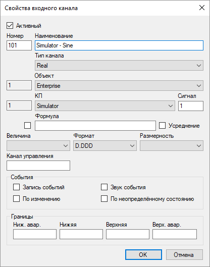
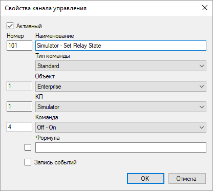
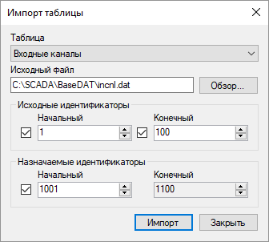
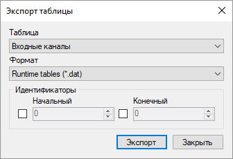
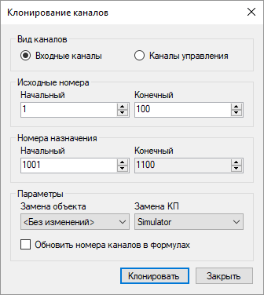

Настройка базы конфигурации
Структура базы конфигурации
База конфигурации представляет собой структурированное описание всей автоматизированной системы. Приложения, входящие в состав Rapid SCADA, используют информацию из базы конфигурации в сочетании со своими параметрами настройки.
База конфигурации редактируется с помощью программы Администратор как часть проекта. Редактируемый экземпляр базы конфигурации имеет формат XML. При передаче проекта на сервер для выполнения база конфигурации конвертируется в специально разработанный формат DAT.
База конфигурации состоит из таблиц, которые, в свою очередь, состоят из столбцов и строк. Каждая таблица относится к одной из следующих групп:
- Система. Данная группа содержит таблицы, с помощью которых настраивается конфигурация конкретной автоматизированной системы.
- Справочники. Данная группа содержит вспомогательные таблицы. В большинстве случаев их изменение не требуется.
Далее приводится перечень таблиц базы конфигурации с их назначением.
| Таблица |
Назначение |
| Система |
| Объекты |
Содержит логические объекты, которые используются для структурирования информации в системе |
| Линии связи |
Описывает физические линии связи, по которым производится обмен данными с устройствами |
| КП |
Содержит контролируемые пункты (КП) - физические или мнимые устройства, с которыми происходит обмен данными |
| Входные каналы |
Определяет входные данные системы, поступающие с устройств, а также значения, вычисляемые на их основе |
| Каналы управления |
Определяет команды, выполняемые системой |
| Роли |
Содержит роли. Роль - это набор функциональных возможностей, доступных пользователю |
| Пользователи |
Содержит перечень пользователей системы с указанием ролей |
| Интерфейс |
Содержит описание объектов интерфейса (представлений, отчётов и окон данных)
|
| Права |
Определяет права на объекты интерфейса по ролям |
| Справочники |
| Типы каналов |
Справочник типов входных каналов |
| Типы команд |
Справочник типов команд, которые могут использоваться каналами управления |
| Типы событий |
Справочник типов событий системы, а также статусов входных каналов в архиве |
| Типы КП |
Справочник типов КП (устройств) |
| Величины |
Справочник измеряемых физических величин |
| Размерности |
Справочник размерностей значений входных каналов, а также перечислимые значения каналов |
| Значения команд |
Справочник значений команд, которые вызываются посредством каналов управления |
| Форматы чисел |
Справочник форматов, используемых при выводе значений входных каналов |
| Формулы |
Справочник формул, используемых при расчётах данных входных каналов и значений команд каналов управления |
Редактирование базы конфигурации
Таблицы базы конфигурации связаны между собой, то есть значение одной таблицы может ссылаться на запись из другой таблицы. Например, каждый КП ссылается на линию связи, к которой он относится. Поэтому редактирование таблиц удобно выполнять в определённой последовательности. Для таблиц из группы Система ввод данных обычно выполняется по порядку, начиная с таблицы Объекты, заканчивая таблицей Права.
При добавлении линий связи и КП рекомендуется использовать мастеры, которые вызываются с помощью кнопок  и
и  . Использование мастера позволяет не только добавить запись в таблицу базы конфигурации, но также создать соответствующую сущность в настройках Коммуникатора. Для создания входных каналов и каналов управления предназначен мастер, вызываемый кнопкой
. Использование мастера позволяет не только добавить запись в таблицу базы конфигурации, но также создать соответствующую сущность в настройках Коммуникатора. Для создания входных каналов и каналов управления предназначен мастер, вызываемый кнопкой  . Однако автоматическое создание каналов должно поддерживаться используемыми драйверами КП, иначе каналы необходимо прописать вручную.
. Однако автоматическое создание каналов должно поддерживаться используемыми драйверами КП, иначе каналы необходимо прописать вручную.
Если на панели инструментов таблицы отображается кнопка  , значит для данной таблицы доступно редактирование записей с помощью формы. Формы для редактирования свойств канала показаны на рис. 1 и 2.
, значит для данной таблицы доступно редактирование записей с помощью формы. Формы для редактирования свойств канала показаны на рис. 1 и 2.

Рис. 1. Свойства входного канала

Рис. 2. Свойства канала управления
Создание базы конфигурации можно значительно ускорить, если использовать сделанные ранее наработки. Для обмена информацией между различными базами программа Администратор имеет функции Импортировать таблицу и Экспортировать таблицу (рис. 3 и 4), которые вызываются из меню Файл. Таблицы экспортируются в файлы формата DAT, XML и CSV. Затем информация может быть импортирована из файлов формата DAT и XML в тот же самый или другой проект. Существует возможность ограничить перечень выгружаемых и закачиваемых данных, задав начальный и конечный идентификаторы. Кроме того, если при импорте назначить новый начальный идентификатор, то импорт данных выполнится со смещением идентификаторов.

Рис. 3. Импорт таблицы

Рис. 4. Экспорт таблицы
Для входных каналов и каналов управления доступен инструмент клонирования (рис. 5). На форме параметров клонирования необходимо задать исходные номера и номера назначения каналов. Также можно выбрать новый объект и КП для клонированных каналов. Функция обновления номеров каналов в формулах работает, если номер канала используется как аргумент в следующих функциях: N(), Val(), Stat(), SetVal(), SetStat() и SetData().

Рис. 5. Клонирование каналов
Для ячеек таблицы доступны функции копирования (Ctrl + C) и вставки (Ctrl + V). Если щёлкнуть по заголовку столбца, строки таблицы отсортируются по значениям данного столбца. Функция поиска и замены (Ctrl + F) также позволяет ускорить редактирование.